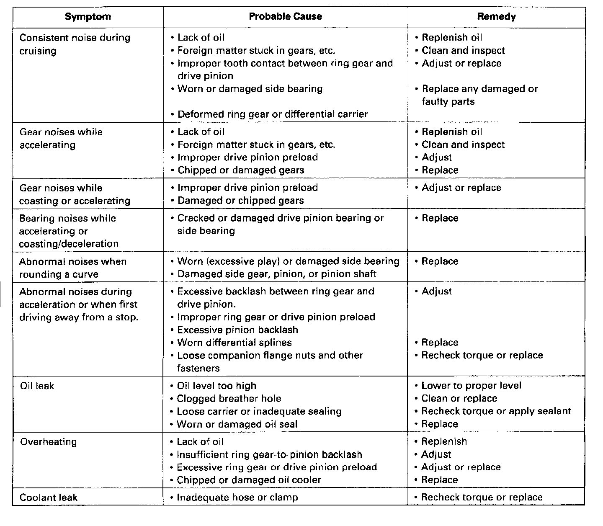

Differential Assembly: Testing and Inspection

Troubleshooting
NOTE: Most problems in the unit are to be diagnosed by identifying noises from the gears or bearings. Care should be taken during diagnosis not to confuse differential noises with those from other drivetrain components. [Noise symptoms will be most prominent]